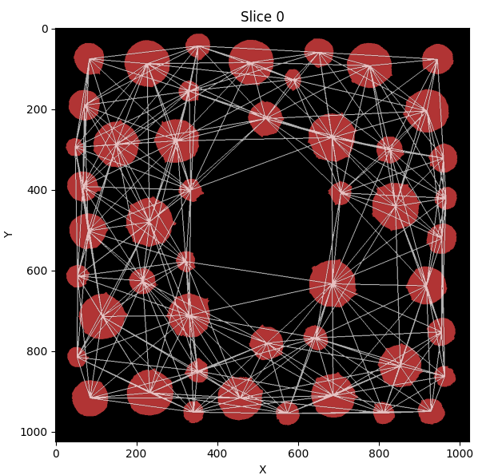
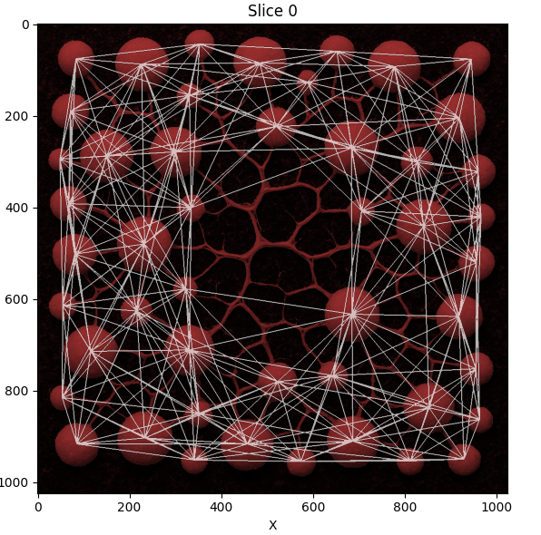

Proximity Networks - Ideal for Cellular Data
Generating a Network Based on Proximity
We will go over another simple example of creating networks. This one is even easier, as it only requires nodes to function, and simply groups nodes as connected pairs based on their distance to each other. Open a new instance of NetTracer3D and once more load in the binary segmentation of the nodes that was created above. First, use ‘Process -> Image -> Label Objects’ to assign each binary object a unique label. Next, select ‘Process -> Calculate -> Calculate Proximity Network’.

Here we can see the menu to generate proximity networks. The search distance here is set to 300, which means nodes will look 300 pixels out for connections (although this will correspond to your scalings). Note there are two options available for searching, shown in the carrot dropdown next to ‘Execution Mode’. The first option searches from centroids and works quite well with big data as the data structure is far simpler. The second option searches from object borders and may be slower on large images by comparison. In this case, I use the second option since these objects are heterogenously sized. For more information on using this algorithm, see ‘Process -> Calculate Network -> Calculate Proximity Network…’
And after algorithm execution:
 {kind=link}
{kind=link}
Proximity networks are a generic way to group together objects in 3D space and are ideal, for example, for grouping together cellular neighborhoods. One use for such cellular neighborhoods is grouping them into communities and analyzing their composition!
Next Steps
Once you have a hang on generating the default network types, proceed to the Labeling Branches and Branch Networks to learn about using NetTracer3D to label branches of objects and create branch networks.